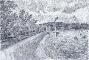
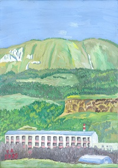
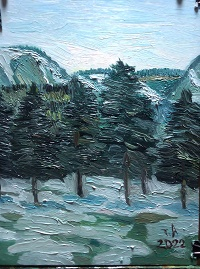

Страницы авторов "Тёмного леса"
Пишите нам! temnyjles@narod.ru

Боргустанский хребет — горный хребет Большого Кавказа, в системе Пастбищного хребта. Расположен на территории Ставропольского края, к северу и северо-западу от Кисловодска. Протяжённость хребта достигает 70 км. Высоты не превышают 2000 м. Вершина хребта представляет собой платообразную поверхность.
В отрогах Пастбищного хребта много пещер и гротов самой различной величины и формы. Это Боргустанская пещерная стена. Длина её около полу километра. Большинство пещер засыпано или недоступно. Самые исследованные и доступные для посещения три: Монахова, Бабушкины окна и Новая. Между ними около 50-80 м.
Добраться до Монаховой пещеры можно, доехав на кисловодском автобусе N 1, 19, 104 до остановки ОАО Мегафон, подняться вверх, минуя организации АТП Курсовета и Автоколонну 1721, пешком по руслу пересохшего ручья в Крымушкиной балке к обрывам известняковых пород. Грунтовая дорога вскоре переходит в тропу. По ходу движения встречается родник. Длина пути около 1,5 км.
Перед Боргустанской пещерной стеной находится наклонённое к югу плато, покрытое растительностью полупустынного типа, которая наверняка будет видоизменяться из-за созданного в этом районе искусственного озера. На террасированных склонах произведены посадки сосны, берёзы, грецкого ореха и др. По пути следования на склонах можно заметить ямы до двух метров в диаметре и до метра в глубину - это провалившиеся искусственные катакомбы - пещеры, в которых хоронили своих одноплеменников аланы. Местные археологи под руководством Н.Н. Михайлова изучили этот могильник и датировали его XII веком, т.е. эпохой христианства домонгольского периода.
Издалека пещеру не видно, т.к. её загораживает скала (пятиметровый столб-останец, так называемый "Монахов колпак"), расположенный перед входом. Вход в пещеру низок, его высота чуть больше метра.
Откуда же появилось это странное название Монахова пещера? Существует легенда, которая гласит, что давным-давно в этой пещере поселился молодой монах-отшельник. Он был очень красив. Горцы приходили к нему за советом, приносили еду. Монах жил в самом большом Дворцовом зале. По узким ходам он ходил за водой к подземному ручью (хотя в пещере пока не обнаружено даже намёков на ручей). Но вот к монаху стала часто заходить молодая и красивая девушка-горянка. И однажды горцы, пришедшие сюда снова, не нашли монаха в пещере. любовь и молодость победили: монах оставил своё убежище и ушёл с девушкой искать лучшую жизнь.
Есть данные, что когда-то Монахова пещера шла далеко в глубь хребта и приводила к подземному озеру и реке.
В начале 1920г. в пещере скрывались белобандиты. Взрыв, произведённый в 1922 году с целью лишить шайку пристанища, перекрыл пещеру перед третьим залом. Вход в него был пробит лишь в 1960-63 годах группой спелеологов-энтузиастов при участии Н.Н. Чернышева, П.А. Костина и др.
Вооружившись заранее спелоснаряжением - фонарями, обвязками, основными и вспомогательными верёвками и карабинами, спецодеждой, касками, шлямбурными крюками и рукавицами, - можно входить в пещеру. Невысокий вход постепенно расширяется до 2м высоты и ширины. Через 8-10 метров первый зал заканчивается мысом. Ход во второй зал представляет собой дыру в полу. По сравнению с первым залом Дворцовый зал более узкий и высокий. Его пол загромождён на большом расстоянии обломками скал. Потолок в некоторых местах уходит на высоту 7-8 метров, но в целом зал не производит впечатления высокого. Длина его намного превосходит длину первого. Его средняя ширина 1,5-2 метра. Стены почти везде покрыты кальцитом, который во многих местах закопчён. Участки стен, не покрытые кальцитом, сплошь исписаны автографами. В конце этого зала в метре от пола есть ещё один ход. Он широкий, и в него свободно может пролезть взрослый человек. Пол хода отполирован до блеска одеждой туристов. И вот ещё одна маленькая "комнатушка", из которой в глубь скалы идёт множество недоступных человеку трещин, из которых веет ветерок. Возможно, что за этими трещинами имеется продолжение пещеры. Несмотря на то, что в пещере не раз бывали люди, она ещё мало изучена, и многое в ней остаётся загадкой. Ходы под обломками скал до сих пор полностью не исследованы. Несомненно, что раньше она имела большую протяжённость. Об этом свидетельствует и легенда "о монахе", и сквозняк в "комнатушке", и многое другое. В Дворцовом зале, недалеко от входа в "комнатушку", есть очень глубокие отверстия в стене, явно искусственного происхождения. В общем, окончательное исследование пещеры - дело будущего.
В 70 метрах к юго-западу от Монаховой пещеры имеются две вертикальные щели. Это так называемые Бабушкины окна. В пяти метрах от Малого окна есть пещера Большое бабушкино окно. Вход в неё такой ширины, что в него без труда пролезет человек. Спустившись на дно пещеры, следует повернуть по узкому коридору в главный зал, где можно выпрямиться во весь рост. В левой части зала начинается спуск в подземное ущелье. На стенах зала имеются окаменевшие раковины древних моллюсков, сохранившие на своей поверхности перламутр, аммониты и белемниты. Спуск в подземелье крутой, но доступный. Пройдя под огромной глыбой, перекрывающей ущелье поперёк, можно дойти до глубокого вертикального колодца. Если спускаться на верёвке на его дно, то там можно увидеть много полузасыпанных щебёнкой ходов и трещин. Как и Монахова пещера, Бабушкины окна образовались в результате тектонических разломов: сотрясения земной коры привели к расколу и смещению пластов известняковых пород. По данным сейсморазведки, в этом районе возможны землетрясения до 9 балов. Спелеологи сделали второй искусственный вход в пещеру. Он расположен на 3-4 метра выше входа в Большое окно. Через этот лаз можно сразу попасть в подземное ущелье, минуя сложные внутренние лабиринты.
Западнее Бабушкиных окон находится пещера Новая. В Боргустанской стене она считается наиболее труднодоступной, но одной из красивейших. Она интересна своими узкими с резкими поворотами ходами, тайнами полузасыпанных галерей, оригинальной фауной. В 1962 году краевед Ф.В. Чернышев с группой спелеологов-любителей раскопал вход в пещеру, и тогда же ей дали название Новая. Войдя в пещеру через очень узкий проход (так называемый "шкуродёр"), легко добраться до небольшого зала, где можно встать во весь рост. Затем ход внезапно обрывается. Далее необходимо слезть вниз с полутораметрового уступа, чтобы попасть в продолжение хода. Сделав шага четыре, упираешься в каменную стену, в которой на высоте лица узкий ход. Через 3 метра снова стена, а внизу щель. Протиснувшись где-то ещё на 3 метра, попадаем в маленький уютный и сухой залик, из которого ведут два хода: один в глубь скалы, другой параллельно ходу, по которому мы добрались сюда. Ход, идущий параллельно ходу снаружи, кончается метров через 6 тупиком. В стене этого хода есть отверстие, соединяющее два хода. Другим ходом начинается зал, имеющий в высоту 6-7 метров, в длину 8-10 метров и в ширину в среднем 1-1,5 метра. В конце этого зала есть непроходимый ход. Вероятно, что он соединяет эту пещеру с Бабушкиным окном. 27 мая 1975 года А. Терский и Б. Снопенков открыли ещё один залик в Новой. На высоте 6-7 метров в стене зала была обнаружена щель. Она явилась ходом в последний зал пещеры. На потолке также открыта сеть ходов и найден второй ход, через который можно попасть из первого зала в глубь пещеры. Но, несмотря на то, что пещеру исследовали, она всё же таит в себе и другие полости и залы. В верхних её галереях зимуют тысячи светло-коричневых мотыльков. Предполагают, что ни в каких других пещерах у нас они не встречаются.
Западнее Новой пещеры тянется ряд интересных каньонов: с одной стороны идёт материковая стена хребта, с другой - огромные скалы. В каньонах таинственно и прекрасно: отвесные стены уходят высоко, и только вверху видна полоска голубого неба. Кое-где между стенами перекинуты естественные арки мостов - это большие каменные глыбы, перекрывшие ущелье. Кругом затейливая игра природы - какие-то оконца, щели, карнизы, ниши... Около одного из каньонов видна скала "Тура", очень похожая на фигуру шахматной ладьи. Недалеко от скалы "Тура" в отвесной стене на высоте 15 метров видно круглое окно, которое называется Чёртовым.
В пещерах Боргустана встречается очень крупная летучая мышь с длинными, узкими, заострёнными крыльями. Это широкоухий складчатогуб из отряда рукокрылых, семейства бульдоговых - редкий вид, занесённый в Красную книгу России. Предплечье у него около 57-63 мм, толстые верхние губы собраны в складки. Очень большие, мясистые и широкие уши с округлыми концами на лбу соединяются поперечной складкой кожи и направлены вперёд параллельно продольной оси головы. Конец хвоста на 30-33 мм выступает из межрёберной перепонки. Окраска тёмная, серо-дымчатая, коричневая или рыжеватая. Острокрылый, клинохвостый с вытянутой вперёд головой, окаймлённой ушами. Он хорошо опознаётся и на лету, выделяясь из всех наших летучих мышей. Селится в вертикальных щелях под каменистыми карнизами в потолках пещер. Образует небольшие, до 20 особей, колонии. Вылет на кормёжку делает в густой темноте, кормится без перерыва почти до рассвета. Добычу ловит высоконад ущельями. Полёт стремительный, но ровный,прямолинейный, с частыми взмахами крыльев, напоминает полёт стрижа. Питается различными ночными жуками и бабочками. В начале мая самки приносят по одному детёнышу. На численности вида отрицательно сказываются антропогенные воздействия на ландшафт, особенно хим обработка близлежащих угодий.
Пещеры, эти удивительные творения природы, нуждаются в охране и бережном отношении, т.к. нерадивые туристы и браконьеры портят их. Хотелось бы, чтобы именно специалисты по-настоящему занялись исследованием наших известных памятников природы.
С.В. Боглачёв, С.Н. Савенко. Архитектура Старого Кисловодска. Изд-во "СНЕГ", 2006
|  | Вид на Кремушинскую балку (на отроге Боргустанского хребта) |
|  | Вид на Боргустанские горы (и Мебельную фабрику ЗАО Бештау) |
Главная страница сайта
Последнее изменение страницы 14 Mar 2022
{kind=link}
{kind=link}
{kind=link}
{kind=link}